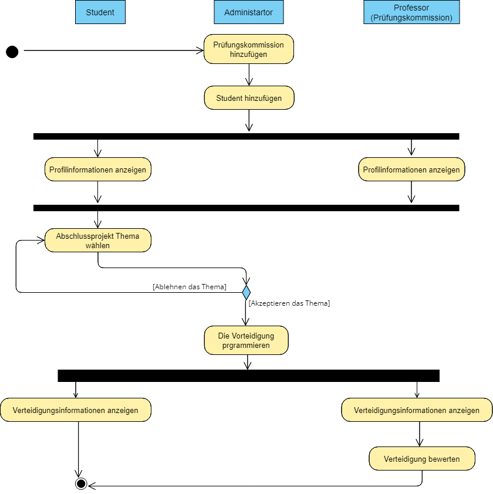

Zurückkehren
Zurückkehren
 live sehen
live sehen
 Quellcode sehen
Quellcode sehen
Abschlussprojekt
Problematik des Projekts
In unserer Hochschule ist es für die Verwaltung schwierig, die Abschlussprojekte-Verteidigungen zu verwalten, da sie auf manuelle Weise arbeiten. Jeder Schüler wählt sein Thema aus und schlägt es der Verwaltung vor, die es entweder annimmt oder ablehnt. Wenn sie es annimmt, kümmert sie sich um die Festlegung des Termins für die Verteidigung jedes Projekts, die Reservierung eines Raums und die Einteilung der Juroren. Diese klassische Methode stellt die Verwaltung vor mehrere Probleme, da sie sehr langsam und nicht effizient ist. Es ist zum Beispiel sehr schwierig, die Historie der Verteidigungen manuell zu durchsuchen, da dies sehr zeitaufwendig ist. Außerdem ist es für die Verwaltung sehr schwierig, alle eingegangenen Anträge und die Termine für die Verteidigung zu organisieren. Nicht zu vergessen, dass es auch zu einer falschen Raumverteilung kommen kann, z. B. wenn zwei Prüfungen versehentlich in denselben Raum gelegt werden, was zu vielen Problemen führt.
Wie können wir also die Verwaltung der Abschlussprojekte-Verteidigungen an unserer Hochschule einfacher und schneller gestalten? Wie können wir ein zuverlässigeres System zur Verwaltung der Abschlussprojekte-Verteidigung schaffen, in dem das Verfahren schnell und effizient ablaufen kann?
Pflichtenheft
- Schüler, Prüfungskommissionen und Administratoren können sich authentifizieren.
- Schüler/innen können ein Thema für die Abschlussprojekt auswählen.
- Schüler können die Informationen zu ihrer Verteidigung einsehen.
- Schüler/innen können ihre Profile einsehen.
- Schüler können ihre Passwörter ändern.
- Prüfungskommissionen können die Note der Verteidigung eines Schülers/einer Schülerin zuweisen.
- Eine Prüfungskommission kann ihr Passwort ändern.
- Eine Prüfungskommission kann die Informationen in ihrem Profil einsehen.
- Der Administrator kann Prüfungskommissionen einem PFE-Projekt zuweisen.
- Der Administrator kann das Datum der Verteidigung festlegen.
- Der Administrator kann Räume für die Verteidigung reservieren.
- Der Administrator kann einen Schüler hinzufügen, entfernen, bearbeiten und anzeigen.
- Der Administrator kann einen Prüfungsausschuss hinzufügen, entfernen, bearbeiten und anzeigen.
- Der Administrator kann eine Verteidigung einstellen, bearbeiten, löschen und anzeigen.
- Der Administrator kann einen Benutzer zur Plattform hinzufügen (Lehrer oder Schüler).
- Der Administrator hat das Privileg, das Passwort eines jeden Benutzers zu ändern.
Klassendiagramm des Projekts
Aktivitätsdiagramm des Projekts
Die Hauptseiten der Anwendung
Startseite

Die Startseite enthält eine Kopfzeile mit dem Logo der Hochschule für Technologie, die auf die aktuelle Seite (Startseite) weiterleitet, und auch eine Schaltfläche, die auf die Anmeldeseite weiterleitet.
dann der Körper mit einem Bild, einer dynamischen öffentlichen Tabelle für Studentenverteidigungen und Funktionen der Plattform.
Am Ende befindet sich die Fußzeile mit dem Kontaktlink und dem Link zur offiziellen Facebook-Seite der Schule.